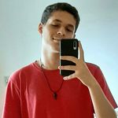

No atrações 018 todos os pontos turísticos e atrações das cidades da região 018 de São Paulo estão reunidos em um só lugar, facilitando sua busca com informações confiáveis publicadas pela comunidade e revisadas por nós! Junte-se a nós e alavanque o turismo da sua cidade!
A missão da Atrações 018 é fornecer uma plataforma virtual que promova e divulgue as atrações turísticas e pontos turísticos das cidades do DDD 018 em São Paulo. Acreditamos que o turismo é uma ferramenta poderosa para o desenvolvimento econômico e social, e nosso objetivo é ajudar a aumentar o número de visitantes em cada cidade, contribuindo assim para o crescimento das comunidades locais.
Nossa visão é ser a plataforma virtual mais completa e confiável para turistas que visitam as cidades do DDD 018 em São Paulo. Queremos ser reconhecidos por nossos usuários como a principal fonte de informações sobre as atrações turísticas de cada cidade, oferecendo uma experiência única e personalizada para cada visitante.
Excelência: buscamos sempre a excelência em tudo o que fazemos, desde a qualidade das informações fornecidas até o atendimento aos nossos usuários.
Comprometimento: estamos comprometidos em ajudar a promover e divulgar as cidades do DDD 018 em São Paulo, contribuindo para o desenvolvimento econômico e social da região.
Inovação: estamos sempre buscando inovar e trazer novidades para a plataforma, a fim de oferecer aos nossos usuários a melhor experiência possível.
Respeito: respeitamos as diferenças culturais e individuais de nossos usuários e colaboradores, promovendo um ambiente de trabalho saudável e inclusivo.
Sustentabilidade: estamos comprometidos com práticas sustentáveis, buscando minimizar o impacto ambiental das nossas atividades e promovendo o turismo responsável e consciente.
Eduardo Santos
Pedro Henrique Bonini
Luan Gabriel Sobral
João Pedro Piva
Jean Komuro
Felipe Celice